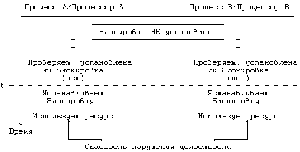
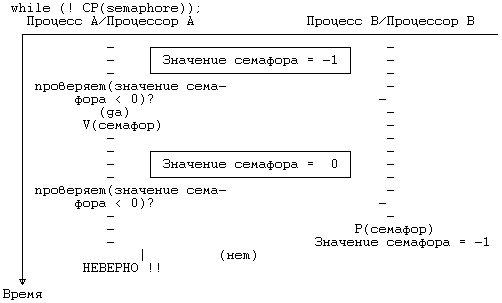
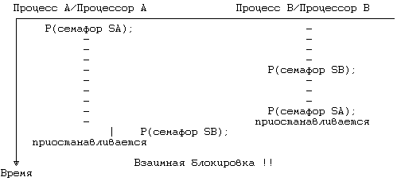
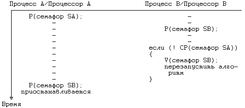
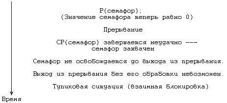

Поддержка системы UNIX в многопроцессорной конфигурации может включать в себя разбиение ядра системы на критические участки, параллельное выполнение которых на нескольких процессорах не допускается. Такие системы предназначались для работы на машинах AT&T 3B20A и IBM 370, для разбиения ядра использовались семафоры (см. [Bach 84]). Нижеследующие рассуждения помогают понять суть данной особенности. При ближайшем рассмотрении сразу же возникают два вопроса: как использовать семафоры и где определить критические участки.
Как уже говорилось в главе 2, если при выполнении критического участка программы процесс приостанавливается, для защиты участка от посягательств со стороны других процессов алгоритмы работы ядра однопроцессорной системы UNIX используют блокировку. Механизм установления блокировки:
выполнять пока (блокировка установлена) /* операция проверки */
приостановиться (до снятия блокировки);
установить блокировку;
механизм снятия блокировки:
снять блокировку;
вывести из состояния приостанова все процессы,
приостановленные в результате блокировки;

Рисунок 12.5. Конкуренция за установку блокировки в многопроцессорных системах
Блокировки такого рода охватывают некоторые критические участки, но не работают в многопроцессорных системах, что видно из Рисунка 12.5. Предположим, что блокировка снята и что два процесса на разных процессорах одновременно пытаются проверить ее наличие и установить ее. В момент t они обнаруживают снятие блокировки, устанавливают ее вновь, вступают в критический участок и создают опасность нарушения целостности структур данных ядра. В условии одновременности имеется отклонение: механизм не сработает, если перед тем, как процесс выполняет операцию проверки, ни один другой процесс не выполнил операцию установления блокировки. Если, например, после обнаружения снятия блокировки процессор A обрабатывает прерывание и в этот момент процессор B выполняет проверку и устанавливает блокировку, по выходе из прерывания процессор A так же установит блокировку. Чтобы предотвратить возникновение подобной ситуации, нужно сделать так, чтобы процедура блокирования была неделимой: проверку наличия блокировки и ее установку следует объединить в одну операцию, чтобы в каждый момент времени с блокировкой имел дело только один процесс.
Семафор представляет собой обрабатываемый ядром целочисленный объект, для которого определены следующие элементарные (неделимые) операции:
- Инициализация семафора, в результате которой семафору присваивается неотрицательное значение;
- Операция типа P, уменьшающая значение семафора. Если значение семафора опускается ниже нулевой отметки, выполняющий операцию процесс приостанавливает свою работу;
- Операция типа V, увеличивающая значение семафора. Если значение семафора в результате операции становится больше или равно 0, один из процессов, приостановленных во время выполнения операции P, выходит из состояния приостанова;
- Условная операция типа P, сокращенно CP (conditional P), уменьшающая значение семафора и возвращающая логическое значение "истина" в том случае, когда значение семафора остается положительным. Если в результате операции значение семафора должно стать отрицательным или нулевым, никаких действий над ним не производится и операция возвращает логическое значение "ложь".
Определенные таким образом семафоры, безусловно, никак не связаны с семафорами пользовательского уровня, рассмотренными в главе 11.
Дийкстра [Dijkstra 65] показал, что семафоры можно реализовать без использования специальных машинных инструкций. На Рисунке 12.6 представлены реализующие семафоры функции, написанные на языке Си. Функция Pprim блокирует семафор по результатам проверки значений, содержащихся в массиве val; каждый процессор в системе управляет значением одного элемента массива. Прежде чем заблокировать семафор, процессор проверяет, не заблокирован ли уже семафор другими процессорами (соответствующие им элементы в массиве val тогда имеют значения, равные 2), а также не предпринимаются ли попытки в данный момент заблокировать семафор со стороны процессоров с более низким кодом идентификации (соответствующие им элементы имеют значения, равные 1). Если любое из условий выполняется, процессор переустанавливает значение своего элемента в 1 и повторяет попытку. Когда функция Pprim открывает внешний цикл, переменная цикла имеет значение, на единицу превышающее код идентификации того процессора, который использовал ресурс последним, тем самым гарантируется, что ни один из процессоров не может монопольно завладеть ресурсом (в качестве доказательства сошлемся на [Dijkstra 65] и [Coffman 73]). Функция Vprim освобождает семафор и открывает для других процессоров возможность получения исключительного доступа к ресурсу путем очистки соответствующего текущему процессору элемента в массиве val и перенастройки значения lastid. Чтобы защитить ресурс, следует выполнить следующий набор команд:
Pprim(семафор);
команды использования ресурса;
Vprim(семафор);
В большинстве машин имеется набор элементарных (неделимых) инструкций,
реализующих операцию блокирования более дешевыми средствами, ибо циклы, входящие в функцию Pprim, работают медленно и снижают производительность системы. Так, например, в машинах серии IBM 370 поддерживается инструкция compare and swap (сравнить и переставить), в машине AT&T 3B20 - инструкция read and clear (прочитать и очистить). При выполнении инструкции read and clear процессор считывает содержимое ячейки памяти, очищает ее (сбрасывает в 0) и по результатам сравнения первоначального содержимого с 0 устанавливает код завершения инструкции. Если ту же инструкцию над той же ячейкой параллельно выполняет еще один процессор, один из двух процессоров прочитает первоначальное содержимое, а другой - 0: неделимость операции гарантируется аппаратным путем. Таким образом, за счет использования данной инструкции функцию Pprim можно было бы реализовать менее сложными средствами (Рисунок 12.7). Процесс повторяет инструкцию read and clear в цикле до тех пор, пока не будет считано значение, отличное от нуля. Начальное значение компоненты семафора, связанной с блокировкой, должно быть равно 1.
Как таковую, данную семафорную конструкцию нельзя реализовать в составе ядра операционной системы, поскольку работающий с ней процесс не выходит из цикла, пока не достигнет своей цели. Если семафор используется для блокирования структуры данных, процесс, обнаружив семафор заблокированным, приостанавливает свое выполнение, чтобы ядро имело возможность переключиться на контекст другого процесса и выполнить другую полезную работу. С помощью функций Pprim и Vprim можно реализовать более сложный набор семафорных операций, соответствующий тому составу, который определен в разделе 12.3.1.
struct semaphore
{
int val[NUMPROCS]; /* замок---1 элемент на каждый про-
/* цессор */
int lastid; /* идентификатор процессора, полу-
/* чившего семафор последним */
};
int procid; /* уникальный идентификатор процес-
/* сора */
int lastid; /* идентификатор процессора, полу-
/* чившего семафор последним */
INIT(semaphore)
struct semaphore semaphore;
{
int i;
for (i = 0; i < NUMPROCS; i++)
semaphore.val[i] = 0;
}
Pprim(semaphore)
struct semaphore semaphore;
{
int i,first;
loop:
first = lastid;
semaphore.val[procid] = 1;
/* продолжение на следующей странице */
|
Рисунок 12.6. Реализация семафорной блокировки на Си
Для начала дадим определение семафора как структуры, состоящей из поля блокировки (управляющего доступом к семафору), значения семафора и очереди процессов, приостановленных по семафору. Поле блокировки содержит информацию, открывающую во время выполнения операций типа P и V доступ к другим полям структуры только одному процессу. По завершении операции значение поля сбрасывается. Это значение определяет, разрешен ли процессу доступ к критическому участку, защищаемому семафором. В начале выполнения алгоритма операции P (Рисунок 12.8) ядро с помощью функции Pprim предоставляет процессу право исключительного доступа к семафору и уменьшает значение семафора. Если семафор имеет неотрицательное значение, текущий процесс получает доступ к критическому участку. По завершении работы процесс сбрасывает блокировку семафора (с помощью функции Vprim), открывая доступ к семафору для других процессов, и возвращает признак успешного завершения. Если же в результате уменьшения значение семафора становится отрицательным, ядро приостанавливает выполнение процесса, используя алгоритм, подобный алгоритму sleep (глава 6): основываясь на значении приоритета, ядро проверяет поступившие сигналы, включает текущий процесс в список приостановленных процессов, в котором последние представлены в порядке поступления, и выполняет переключение контекста. Операция V (Рисунок 12.9) получает исключительный доступ к семафору через функцию Pprim и увеличивает значение семафора. Если очередь приостановленных по семафору процессов непуста, ядро выбирает из нее первый процесс и переводит его в состояние "готовности к запуску".
forloop:
for (i = first; i < NUMPROCS; i++)
{
if (i == procid)
{
semaphore.val[i] = 2;
for (i = 1; i < NUMPROCS; i++)
if (i != procid && semaphore.val[i] == 2)
goto loop;
lastid = procid;
return; /* успешное завершение, ресурс
/* можно использовать
*/
}
else if (semaphore.val[i])
goto loop;
}
first = 1;
goto forloop;
}
Vprim(semaphore)
struct semaphore semaphore;
{
lastid = (procid + 1) % NUMPROCS; /* на следующий
/* процессор */
semaphore.val[procid] = 0;
}
|
Рисунок 12.6. Реализация семафорной блокировки на Си (продолжение)
Операции P и V по своему действию похожи на функции sleep и wakeup. Главное различие между ними состоит в том, что семафор является структурой данных, тогда как используемый функциями sleep и wakeup адрес представляет собой всего лишь число. Если начальное значение семафора - нулевое, при выполнении операции P над семафором процесс всегда приостанавливается, поэтому операция P может заменять функцию sleep. Операция V, тем не менее, выводит из состояния приостанова только один процесс, тогда как однопроцессорная функция wakeup возобновляет все процессы, приостановленные по адресу, связанному с событием.
С точки зрения семантики использование функции wakeup означает: данное системное условие более не удовлетворяется, следовательно, все приостановленные по условию процессы должны выйти из состояния приостанова. Так, например, процессы, приостановленные в связи с занятостью буфера, не должны дальше пребывать в этом состоянии, если буфер больше не используется, поэтому они возобновляются ядром. Еще один пример: если несколько процессов выводят данные на терминал с помощью функции write, терминальный драйвер может перевести их в состояние приостанова в связи с невозможностью обработки больших объемов информации. Позже, когда драйвер будет готов к приему следующей порции данных, он возобновит все приостановленные им процессы. Использование операций P и V в тех случаях, когда устанавливающие блокировку процессы получают доступ к ресурсу поочередно, а все остальные процессы - в порядке поступления запросов, является более предпочтительным. В сравнении с однопроцессорной процедурой блокирования (sleep-lock) данная схема обычно выигрывает, так как если при наступлении события все процессы возобновляются, большинство из них может вновь наткнуться на блокировку и снова перейти в состояние приостанова. С другой стороны, в тех случаях, когда требуется вывести из состояния приостанова все процессы одновременно, использование операций P и V представляет известную сложность.
struct semaphore {
int lock;
};
Init(semaphore)
struct semaphore semaphore;
{
semaphore.lock = 1;
}
Pprim(semaphore)
struct semaphore semaphore;
{
while (read_and_clear(semaphore.lock))
;
}
Vprim(semaphore)
struct semaphore semaphore;
{
semaphore.lock = 1;
}
|
Рисунок 12.7. Операции над семафором, использующие инструкцию
read and clear
Если операция возвращает значение семафора, является ли она эквивалентной функции wakeup?
while (value(semaphore) < 0)
V(semaphore);
Если вмешательства со стороны других процессов нет, ядро повторяет цикл до тех пор, пока значение семафора не станет больше или равно 0, ибо это означает, что в состоянии приостанова по семафору нет больше ни одного процесса. Тем не менее, нельзя исключить и такую возможность, что сразу после того, как процесс A при тестировании семафора на одноименном процессоре обнаружил нулевое значение семафора, процесс B на своем процессоре выполняет операцию P, уменьшая значение семафора до -1 (Рисунок 12.10). Процесс A продолжит свое выполнение, думая, что им возобновлены все приостановленные по семафору процессы. Таким образом, цикл выполнения операции не дает гарантии возобновления всех приостановленных процессов, поскольку он не является элементарным.
алгоритм P /* операция над семафором типа P */
входная информация: (1) семафор
(2) приоритет
выходная информация: 0 - в случае нормального завершения
-1 - в случае аварийного выхода из
состояния приостанова по сигналу, при-
нятому в режиме ядра
{
Pprim(semaphore.lock);
уменьшить (semaphore.value);
если (semaphore.value >= 0)
{
Vprim(semaphore.lock);
вернуть (0);
}
/* следует перейти в состояние приостанова */
если (проверяются сигналы)
{
если (имеется сигнал, прерывающий нахождение в сос-
тоянии приостанова)
{
увеличить (semaphore.value);
если (сигнал принят в режиме ядра)
{
Vprim(semaphore.lock);
вернуть (-1);
}
в противном случае
{
Vprim(semaphore.lock);
longjmp;
}
}
}
поставить процесс в конец списка приостановленных по се-
мафору;
Vprim(semaphore.lock);
выполнить переключение контекста;
проверить сигналы (см. выше);
вернуть (0);
}
|
Рисунок 12.8. Алгоритм выполнения операции P
Рассмотрим еще один феномен, связанный с использованием семафоров в однопроцессорной системе. Предположим, что два процесса, A и B, конкурируют за семафор. Процесс A обнаруживает, что семафор свободен и что процесс B приостановлен; значение семафора равно -1. Когда с помощью операции V процесс A освобождает семафор, он выводит тем самым процесс B из состояния приостанова и вновь делает значение семафора нулевым. Теперь предположим, что процесс A, по-прежнему выполняясь в режиме ядра, пытается снова заблокировать семафор. Производя операцию P, процесс приостановится, поскольку семафор имеет нулевое значение, несмотря на то, что ресурс пока свободен. Системе придется "раскошелиться" на дополнительное переключение контекста. С другой стороны, если бы блокировка была реализована на основе однопроцессорной схемы (sleep-lock), процесс A получил бы право на повторное использование ресурса, поскольку за это время ни один из процессов не смог бы заблокировать его. Для этого случая схема sleep-lock более подходит, чем схема с использованием семафоров.
алгоритм V /* операция над семафором типа V */
входная информация: адрес семафора
выходная информация: отсутствует
{
Pprim(semaphore.lock);
увеличить (semaphore.value);
если (semaphore.value <= 0)
{
удалить из списка процессов, приостановленных по се-
мафору, первый по счету процесс;
перевести его в состояние готовности к запуску;
}
Vprim(semaphore.lock);
}
|
Рисунок 12.9. Алгоритм выполнения операции V
Когда блокируются сразу несколько семафоров, очередность блокирования должна исключать возникновение тупиковых ситуаций. В качестве примера рассмотрим два семафора, A и B, и два алгоритма, требующих одновременной блокировки семафоров. Если бы алгоритмы устанавливали блокировку на семафоры в обратном порядке, как следует из Рисунка 12.11, последовало бы возникновение тупиковой ситуации; процесс A на одноименном процессоре захватывает семафор SA, в то время как процесс B на своем процессоре захватывает семафор SB. Процесс A пытается захватить и семафор SB, но в результате операции P переходит в состояние приостанова, поскольку значение семафора SB не превышает 0. То же самое происходит с процессом B, когда последний пытается захватить семафор SA. Ни тот, ни другой процессы продолжаться уже не могут.
Для предотвращения возникновения подобных ситуаций используются соответствующие алгоритмы обнаружения опасности взаимной блокировки, устанавливающие наличие опасной ситуации и ликвидирующие ее. Тем не менее, использование таких алгоритмов "утяжеляет" ядро. Поскольку число ситуаций, в которых процесс должен одновременно захватывать несколько семафоров, довольно ограничено, легче было бы реализовать алгоритмы, предупреждающие возникновение тупиковых ситуаций еще до того, как они будут иметь место. Если, к примеру, какой-то набор семафоров всегда блокируется в одном и том же порядке, тупиковая ситуация никогда не возникнет. Но в том случае, когда захвата семафоров в обратном порядке избежать не удается, операция CP предотвратит возникновение тупиковой ситуации (см. Рисунок 12.12): если операция завершится неудачно, процесс B освободит свои ресурсы, дабы избежать взаимной блокировки, и позже запустит алгоритм на выполнение повторно, скорее всего тогда, когда процесс A завершит работу с ресурсом.
Чтобы предупредить одновременное обращение процессов к ресурсу, программа обработки прерываний, казалось бы, могла воспользоваться семафором, но из-за того, что она не может приостанавливать свою работу (см. главу 6), использовать операцию P в этой программе нельзя. Вместо этого можно использовать "циклическую блокировку" (spin lock) и не переходить в состояние приостанова, как в следующем примере:

Рисунок 12.10. Неудачное имитация функции wakeup при использовании операции V

Рисунок 12.11. Возникновение тупиковой ситуации из-за смены очередности блокирования

Рисунок 12.12. Использование операции P условного типа для предотвращения взаимной блокировки
Операция повторяется в цикле до тех пор, пока значение семафора не превысит 0; программа обработки прерываний не приостанавливается и цикл завершается только тогда, когда значение семафора станет положительным, после чего это значение будет уменьшено операцией CP.
Чтобы предотвратить ситуацию взаимной блокировки, ядру нужно запретить все прерывания, выполняющие "циклическую блокировку". Иначе выполнение процесса, захватившего семафор, будет прервано еще до того, как он сможет освободить семафор; если программа обработки прерываний попытается захватить этот семафор, используя "циклическую блокировку", ядро заблокирует само себя. В качестве примера обратимся к Рисунку 12.13. В момент возникновения прерывания значение семафора не превышает 0, поэтому результатом выполнения операции CP всегда будет "ложь". Проблема решается путем запрещения всех прерываний на то время, пока семафор захвачен процессом.

Рисунок 12.13. Взаимная блокировка при выполнении программы
обработки прерывания
В данном разделе мы рассмотрим четыре алгоритма ядра, реализованных с использованием семафоров. Алгоритм выделения буфера иллюстрирует сложную схему блокирования, на примере алгоритма wait показана синхронизация выполнения процессов, схема блокирования драйверов реализует изящный подход к решению данной проблемы, и наконец, метод решения проблемы холостой работы процессора показывает, что нужно сделать, чтобы избежать конкуренции между процессами.
12.3.3.1 Выделение буфера
Обратимся еще раз к алгоритму getblk, рассмотренному нами в главе 3. Алгоритм работает с тремя структурами данных: заголовком буфера, хеш-очередью буферов и списком свободных буферов. Ядро связывает семафор со всеми экземплярами каждой структуры. Другими словами, если у ядра имеются в распоряжении 200 буферов, заголовок каждого из них включает в себя семафор, используемый для захвата буфера; когда процесс выполняет над семафором операцию P, другие процессы, тоже пожелавшие захватить буфер, приостанавливаются до тех пор, пока первый процесс не исполнит операцию V. У каждой хеш-очереди буферов также имеется семафор, блокирующий доступ к очереди. В однопроцессорной системе блокировка хеш-очереди не нужна, ибо процесс никогда не переходит в состояние приостанова, оставляя очередь в несогласованном (неупорядоченном) виде. В многопроцессорной системе, тем не менее, возможны ситуации, когда с одной и той же хеш-очередью работают два процесса; в каждый момент времени семафор открывает доступ к очереди только для одного процесса. По тем же причинам и список свободных буферов нуждается в семафоре для защиты содержащейся в нем информации от искажения.
алгоритм getblk /* многопроцессорная версия */
входная информация: номер файловой системы
номер блока
выходная информация: захваченный буфер, предназначенный для
обработки содержимого блока
{
выполнять (пока буфер не будет обнаружен)
{
P(семафор хеш-очереди);
если (блок находится в хеш-очереди)
{
если (операция CP(семафор буфера) завершается не-
удачно) /* буфер занят */
{
V(семафор хеш-очереди);
P(семафор буфера); /* приостанов до момен-
* та освобождения
*/
если (операция CP(семафор хеш-очереди) заверша-
ется неудачно)
{
V(семафор буфера);
продолжить; /* выход в цикл "выполнять"
*/
}
в противном случае если (номер устройства или
номер блока изменились)
{
V(семафор буфера);
V(семафор хеш-очереди);
}
}
выполнять (пока операция CP(семафор списка свобод-
ных буферов) не завершится успешно)
; /* "кольцевой цикл" */
пометить буфер занятым;
убрать буфер из списка свободных буферов;
V(семафор списка свободных буферов);
V(семафор хеш-очереди);
вернуть буфер;
}
в противном случае /* буфер отсутствует в хеш-
* очереди
*/
/* здесь начинается выполнение оставшейся части алго-
* ритма
*/
}
}
|
Рисунок 12.14. Выделение буфера с использованием семафоров
На Рисунке 12.14 показана первая часть алгоритма getblk, реализованная в многопроцессорной системе с использованием семафоров. Просматривая буферный кеш в поисках указанного блока, ядро с помощью операции P захватывает семафор, принадлежащий хеш-очереди. Если над семафором уже кем-то произведена операция данного типа, текущий процесс приостанавливается до тех пор, пока процесс, захвативший семафор, не освободит его, выполнив операцию V. Когда текущий процесс получает право исключительного контроля над хеш-очередью, он приступает к поиску подходящего буфера. Предположим, что буфер находится в хеш-очереди. Ядро (процесс A) пытается захватить буфер, но если оно использует операцию P и если буфер уже захвачен, ядру придется приостановить свою работу, оставив хеш-очередь заблокированной и не допуская таким образом обращений к ней со стороны других процессов, даже если последние ведут поиск незахваченных буферов. Пусть вместо этого процесс A захватывает буфер, используя операцию CP; если операция завершается успешно, буфер становится открытым для процесса. Процесс A захватывает семафор, принадлежащий списку свободных буферов, выполняя операцию CP, поскольку семафор захватывается на непродолжительное время и, следовательно, приостанавливать свою работу, выполняя операцию P, процесс просто не имеет возможности. Ядро убирает буфер из списка свободных буферов, снимает блокировку со списка и с хеш-очереди и возвращает захваченный буфер. Предположим, что операция CP над буфером завершилась неудачно из-за того, что семафор, принадлежащий буферу, оказался захваченным. Процесс A освобождает семафор, связанный с хеш-очередью, и приостанавливается, пытаясь выполнить операцию P над семафором буфера. Операция P над семафором будет выполняться, несмотря на то, что операция CP уже потерпела неудачу. По завершении выполнения операции процесс A получает власть над буфером. Так как в оставшейся части алгоритма предполагается, что буфер и хеш-очередь захвачены, процесс A теперь пытается захватить хеш-очередь (*). Поскольку очередность захвата здесь (сначала семафор буфера, потом семафор очереди) обратна вышеуказанной очередности, над семафором выполняется операция CP. Если попытка захвата заканчивается неудачей, имеет место обычная обработка, требующаяся по ходу задачи. Но если захват удается, ядро не может быть уверено в том, что захвачен корректный буфер, поскольку содержимое буфера могло быть ранее изменено другим процессом, обнаружившим буфер в списке свободных буферов и захватившим на время его семафор. Процесс A, ожидая освобождения семафора, не имеет ни малейшего представления о том, является ли интересующий его буфер тем буфером, который ему нужен, и поэтому прежде всего он должен убедиться в правильности содержимого буфера; если проверка дает отрицательный результат, алгоритм запускается сначала. Если содержимое буфера корректно, процесс A завершает выполнение алгоритма.
многопроцессорная версия алгоритма wait
{
для (;;) /* цикл */
{
перебор всех процессов-потомков:
если (потомок находится в состоянии "прекращения
существования")
вернуть управление;
P(zombie_semaphore); /* начальное значение - 0 */
}
}
|
Рисунок 12.15. Многопроцессорная версия алгоритма wait
Оставшуюся часть алгоритма можно рассмотреть в качестве упражнения.
12.3.3.2 Wait
Из главы 7 мы уже знаем о том, что во время выполнения системной функции wait процесс приостанавливает свою работу до момента завершения выполнения своего потомка. В многопроцессорной системе перед процессом встает задача не упустить при выполнении алгоритма wait потомка, прекратившего существование с помощью функции exit; если, например, в то время, пока на одном процессоре процесс-родитель запускает функцию wait, на другом процессоре его потомок завершил свою работу, родителю нет необходимости приостанавливать свое выполнение в ожидании завершения второго потомка. В каждой записи таблицы процессов имеется семафор, именуемый zombie_semaphore и имеющий в начале нулевое значение. Этот семафор используется при организации взаимодействия wait/exit (Рисунок 12.15). Когда потомок завершает работу, он выполняет над семафором своего родителя операцию V, выводя родителя из состояния приостанова, если тот перешел в него во время исполнения функции wait. Если потомок завершился раньше, чем родитель запустил функцию wait, этот факт будет обнаружен родителем, который тут же выйдет из состояния ожидания. Если оба процесса исполняют функции exit и wait параллельно, но потомок исполняет функцию exit уже после того, как родитель проверил его статус, операция V, выполненная потомком, воспрепятствует переходу родителя в состояние приостанова. В худшем случае процесс-родитель просто повторяет цикл лишний раз.
12.3.3.3 Драйверы
В многопроцессорной реализации вычислительной системы на базе компьютеров AT&T 3B20 семафоры в структуру загрузочного кода драйверов не включаются, а операции типа P и V выполняются в точках входа в каждый драйвер (см. [Bach 84]). В главе 10 мы говорили о том, что интерфейс, реализуемый драйверами устройств, характеризуется очень небольшим числом точек входа (на практике их около 20). Защита драйверов осуществляется на уровне точек входа в них:
P(семафор драйвера);
открыть (драйвер);
V(семафор драйвера);
Если для всех точек входа в драйвер использовать один и тот же семафор, но при этом для разных драйверов - разные семафоры, критический участок программы драйвера будет исполняться процессом монопольно. Семафоры могут назначаться как отдельному устройству, так и классам устройств. Так, например, отдельный семафор может быть связан и с отдельным физическим терминалом и со всеми терминалами сразу. В первом случае быстродействие системы выше, ибо процессы, обращающиеся к терминалу, не захватывают семафор, имеющий отношение к другим терминалам, как во втором случае. Драйверы некоторых устройств, однако, поддерживают внутреннюю связь с другими драйверами; в таких случаях использование одного семафора для класса устройств облегчает понимание задачи. В качестве альтернативы в вычислительной системе 3B20A предоставлена возможность такого конфигурирования отдельных устройств, при котором программы драйвера запускаются на точно указанных процессорах.
Проблемы возникают тогда, когда драйвер прерывает работу системы и его семафор захвачен: программа обработки прерываний не может быть вызвана, так как иначе возникла бы угроза разрушения данных. С другой стороны, ядро не может оставить прерывание необработанным. Система 3B20A выстраивает прерывания в очередь и ждет момента освобождения семафора, когда вызов программы обработки прерываний не будет иметь опасные последствия.
12.3.3.4 Фиктивные процессы
Когда ядро выполняет переключение контекста в однопроцессорной системе, оно функционирует в контексте процесса, уступающего управление (см. главу 6). Если в системе нет процессов, готовых к запуску, ядро переходит в состояние простоя в контексте процесса, выполнявшегося последним. Получив прерывание от таймера или других периферийных устройств, оно обрабатывает его в контексте того же процесса.
В многопроцессорной системе ядро не может простаивать в контексте процесса, выполнявшегося последним. Посмотрим, что произойдет после того, как процесс, приостановивший свою работу на процессоре A, выйдет из состояния приостанова. Процесс в целом готов к запуску, но он запускается не сразу же по выходе из состояния приостанова, даже несмотря на то, что его контекст уже находится в распоряжении процессора A. Если этот процесс выбирается для запуска процессором B, последний переключается на его контекст и возобновляет его выполнение. Когда в результате прерывания процессор A выйдет из простоя, он будет продолжать свою работу в контексте процесса A до тех пор, пока не произведет переключение контекста. Таким образом, в течение короткого промежутка времени с одним и тем же адресным пространством (в частности, со стеком ядра) будут вести работу (и, что весьма вероятно, производить запись) сразу два процессора.
Решение этой проблемы состоит в создании некоторого фиктивного процесса; когда процессор находится в состоянии простоя, ядро переключается на контекст фиктивного процесса, делая этот контекст текущим для бездействующего процессора. Контекст фиктивного процесса состоит только из стека ядра; этот процесс не является выполнимым и не выбирается для запуска. Поскольку каждый процессор простаивает в контексте своего собственного фиктивного процесса, навредить друг другу процессоры уже не могут.
(*) Вместо захвата хеш-очереди в этом месте можно было бы установить соответствующий флаг, проверяемый далее перед выполнением операции V, но чтобы проиллюстрировать схему захвата семафоров в обратной последовательности, в изложении мы будем придерживаться ранее описанного варианта.
Предыдущая глава || Оглавление || Следующая глава